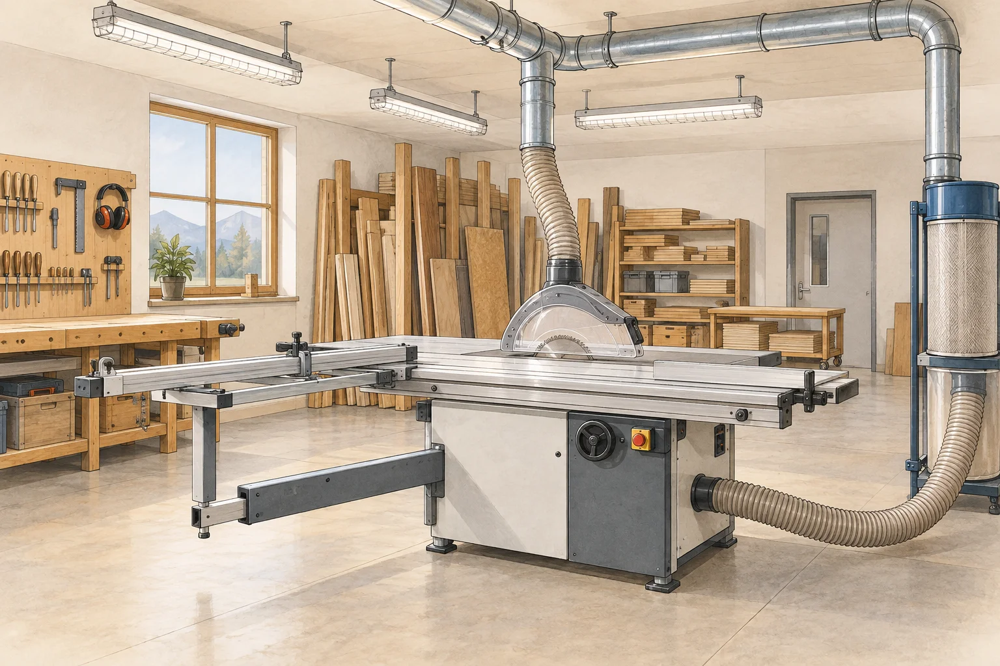

Vorschriften · FI-Schutz · Raumarten · Holzstaub · Maschinensicherheit Rules · RCD protection · types of location · wood dust · machine safety

In einer Schreinerei bestimmt ein einziger Stoff fast alle Anforderungen: Holzstaub. Er ist brennbar, in feiner Verteilung sogar explosionsfähig, er setzt sich überall ab, isoliert Wärme und dringt in jedes Gehäuse ein, das nicht dicht ist.
In a joinery workshop almost every requirement is driven by one substance: wood dust. It is combustible, finely dispersed even explosive, it settles everywhere, insulates heat and enters any enclosure that is not sealed.
| ErschwernisAggravating factor | Folge für die InstallationConsequence for the installation |
|---|---|
| Holzstaub, brennbarcombustible wood dust | staubdichte Gehäuse, keine heissen Oberflächen, Brandschutz-FIdust-tight enclosures, no hot surfaces, fire-protection RCD |
| Feinstaub in der Absaugungfine dust in the extraction system | Explosionsgefahr — Ex-Bereiche prüfenexplosion risk — check for hazardous areas |
| Lösungsmittel im Lackierraumsolvents in the spray booth | Ex-Bereich, nur zugelassene Betriebsmittelhazardous area, only approved equipment |
| Grosse Maschinen mit Motorenlarge machines with motors | Motorschutz, Not-Halt, Wiederanlaufsperremotor protection, emergency stop, restart inhibit |
| Werkstücke und Transportworkpieces and transport | mechanischer Schutz, Anfahrschutz, hohe Montagemechanical protection, impact guards, high mounting |
| Rotierende Werkzeugerotating tools | Beleuchtung ohne Stroboskopeffektlighting free of stroboscopic effect |
| RaumRoom | BedingungenConditions | AnforderungenRequirements |
|---|---|---|
| MaschinenraumMachine shop | Staub, mechanische Beanspruchung, Motorendust, mechanical stress, motors | IP54 und höher, Motorschutz, Not-HaltIP54 and above, motor protection, emergency stop |
| Absauganlage, SiloExtraction system, silo | Feinstaub in hoher Konzentrationfine dust in high concentration | Ex-Bereich für Staub — Fachplanungdust hazardous area — specialist design |
| Lackier- und SpritzraumPaint and spray room | Lösungsmitteldämpfesolvent vapours | Ex-Bereich für Gase — Fachplanung, Lüftungsverriegelunggas hazardous area — specialist design, interlocked ventilation |
| HolzlagerTimber store | hohe Brandlast, wenig Bewegunghigh fire load, little activity | Brandschutz-FI, keine Wärmequellenfire-protection RCD, no heat sources |
| Büro und AusstellungOffice and showroom | normal, trockennormal, dry | übliche Installationstandard installation |
Brennbarer Feinstaub kann in geeigneter Konzentration mit Luft ein explosionsfähiges Gemisch bilden. Eine wirksame Zündquelle kann es entzünden. Abgelagerter Staub kann brennen oder glimmen und später aufgewirbelt werden. Staub daher mit geeigneter Absaugung aufnehmen, nicht mit Druckluft verteilen; die Ex-Zoneneinteilung gehört in die Fachplanung.
Combustible fine dust at an appropriate concentration in air can form an explosive mixture. An effective ignition source can ignite it. Deposited dust can burn or smoulder and later become airborne. Use suitable extraction rather than spreading dust with compressed air; specialist planning must establish hazardous zones.
| IΔn | Zweck und OrtPurpose and location |
|---|---|
| 30 mA | Personenschutz für alle Steckdosenstromkreise und Handwerkzeugepersonal protection for all socket circuits and hand tools |
| 300 mA | Brandschutz, vorgelagert und selektiv — wegen der hohen Brandlastfire protection, upstream and selective — because of the high fire load |
Handgeführte Elektrowerkzeuge sind in der Schreinerei allgegenwärtig, ihre Zuleitungen werden über den Boden gezogen, geknickt und überfahren. Der 30-mA-FI ist hier keine Formalität, sondern die entscheidende Massnahme.
Hand-held power tools are everywhere in a joinery, and their leads get dragged across the floor, kinked and run over. A 30 mA RCD is not a formality here but the decisive measure.
Fällt während der Arbeit die Spannung aus, bleibt die Kreissäge stehen. Ohne Wiederanlaufsperre läuft sie beim Wiederkehren der Spannung sofort an — womöglich während jemand ins Werkzeug greift, um das Werkstück zu befreien. Umgesetzt wird die Sperre über eine Schützsteuerung mit Selbsthaltung oder einen Unterspannungsauslöser.
If the supply fails during work, the saw stops. Without a restart inhibit it starts again the instant power returns — possibly while someone is reaching into the blade to free the workpiece. The inhibit is implemented with a contactor circuit with self-holding, or an undervoltage release.
Dieser Punkt ist in einer Schreinerei sicherheitsrelevant. Eine Leuchtstofflampe an einem konventionellen Vorschaltgerät flackert mit doppelter Netzfrequenz, also 100-mal pro Sekunde. Das Auge nimmt das nicht bewusst wahr.
In a joinery this point is safety-critical. A fluorescent lamp on a magnetic ballast flickers at twice mains frequency, that is 100 times per second. The eye does not consciously notice it.
Dreht sich nun ein Werkzeug mit einer Drehzahl, die zu diesem Takt passt, sieht es bei jedem Lichtblitz gleich aus — die Säge oder der Fräser wirkt langsam oder stillstehend, obwohl er mit voller Drehzahl läuft. Wer danach greift, verliert Finger.
If a tool then rotates at a speed matching that rhythm, it looks the same at every flash — the blade or cutter appears slow or stationary although it is running at full speed. Anyone reaching for it loses fingers.
Bei Drehstrommaschinen bestimmt das Drehfeld die Drehrichtung. Eine Hobelmaschine oder Kreissäge, die rückwärts läuft, ist gefährlich und kann Werkstücke auswerfen. Nach jeder Änderung an der Zuleitung Drehfeld messen — nicht «kurz probieren».
On three-phase machines the phase sequence determines the direction of rotation. A planer or saw running backwards is dangerous and can eject workpieces. After any change to the supply, measure the phase sequence — do not “just try it”.
Massgebend sind die NIN, die Vorschriften zum Explosionsschutz für Staub und Gase, die Maschinenrichtlinie beziehungsweise die dazugehörigen Normen zur Maschinensicherheit sowie die Suva-Unterlagen zur Holzbearbeitung. Vor der Abgabe die einschlägigen Kapitel und die betriebliche Gefährdungsbeurteilung heranziehen — die Zonen im Lackierraum und in der Absaugung werden objektspezifisch festgelegt.
The governing documents are the NIN, the explosion protection rules for dust and gases, the machinery directive and its associated machine safety standards, and the Suva material on woodworking. Before submitting, consult the relevant chapters and the company's risk assessment — the zones in the spray room and extraction system are defined for each site individually.
Eine Staubwolke bietet viel Oberfläche für die Reaktion mit Sauerstoff. Bei geeigneter Konzentration und Zündquelle kann die Verbrennung explosionsartig verlaufen. Auch Staubschichten sind gefährlich: Sie können glimmen, Wärme stauen und weitere Wolken speisen.
A dust cloud provides a large surface for reaction with oxygen. At suitable concentration and with an ignition source, combustion can become explosive. Dust layers are also hazardous: they can smoulder, retain heat and feed further clouds.
Leuchtstofflampen an konventionellen Vorschaltgeräten flimmern mit 100 Hz. Dreht sich ein Werkzeug passend zu diesem Takt, erscheint es bei jedem Lichtblitz in derselben Stellung und wirkt langsam oder stillstehend, obwohl es mit voller Drehzahl läuft. Wer danach greift, verletzt sich schwer.
Fluorescent lamps on magnetic ballasts flicker at 100 Hz. If a tool rotates in step with that rhythm, it appears in the same position at every flash and looks slow or stationary although running at full speed. Anyone reaching for it is seriously injured.
Zeitliche Lichtmodulation mit geeigneten Vorschaltgeräten bzw. LED-Treibern minimieren und die Beleuchtung für bewegte Maschinenteile beurteilen. Die Aufteilung auf Aussenleiter kann Modulation verringern, garantiert aber keinen Schutz. Ein niedriges sichtbares Flimmern beweist nicht automatisch einen geringen Stroboskopeffekt.
Minimise temporal light modulation using suitable ballasts or LED drivers and assess lighting for moving machinery. Distribution across phases can reduce modulation but does not guarantee protection. Low visible flicker does not automatically imply a low stroboscopic effect.
Sie verhindert, dass eine Maschine nach einem Spannungsausfall von selbst wieder anläuft. Die Maschine muss bewusst neu gestartet werden. Umgesetzt wird das mit einer Schützsteuerung mit Selbsthaltung oder mit einem Unterspannungsauslöser.
It prevents a machine from restarting by itself after a supply failure. The machine must be deliberately started again. It is implemented with a contactor circuit with self-holding or with an undervoltage release.
Die RCD-Auswahl richtet sich nach dem Stromkreis, der Last und der Einstufung der Betriebsstätte. Zusätzlicher Schutz und Fehler-/Brandschutz sind zu unterscheiden; Selektivität und gegebenenfalls Umrichter-Fehlerstromformen sind nachzuweisen. Die Tabelle ist eine Übersicht, keine universelle Auslegung für jede Maschine.
RCD selection depends on the circuit, load and classification of the location. Distinguish additional protection from fault/fire protection; verify selectivity and any converter-related residual-current waveforms. The table is an overview, not a universal design for every machine.
Damit sie nur läuft, wenn abgesaugt wird. Ohne Absaugung verteilt sich der Staub im Raum, was Brand- und Explosionsgefahr sowie eine Gesundheitsgefährdung durch Feinstaub bedeutet.
So that it only runs when extraction is on. Without extraction the dust spreads through the room, creating fire and explosion risk as well as a health hazard from fine dust.
Weil das Drehfeld die Drehrichtung bestimmt. Eine Kreissäge oder Hobelmaschine, die rückwärts läuft, kann Werkstücke auswerfen und ist unmittelbar gefährlich. Das Ausprobieren an der laufenden Maschine ist keine zulässige Alternative zur Messung.
Because the phase sequence determines the direction of rotation. A saw or planer running backwards can eject workpieces and is immediately dangerous. Trying it out on the running machine is not an acceptable alternative to measuring.
Typischerweise der Lackier- und Spritzraum wegen der Lösungsmitteldämpfe sowie die Absauganlage und das Späne-Silo wegen des Feinstaubs. Die Zoneneinteilung wird objektspezifisch festgelegt und erfordert eine Fachplanung — das ist keine Lernendenarbeit.
Typically the paint and spray room because of solvent vapours, and the extraction system and chip silo because of fine dust. The zone classification is defined per site and requires specialist design — this is not apprentice work.